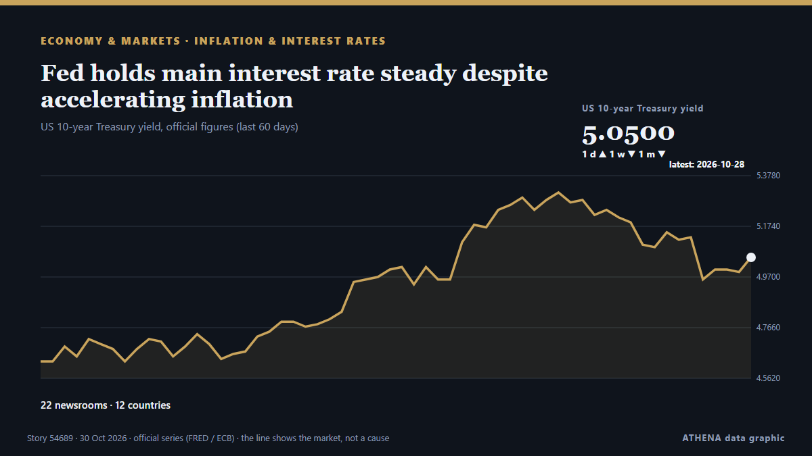

Fed holds main interest rate steady despite accelerating inflation

Two policymakers on the Federal Open Market Committee dissented in favor of raising the federal funds rate by 0.25 percentage point. из Supply Chain Dive
Независимые источники: 22 издания в 12 странах, с 28 окт.; первым сообщил NPR; освещение идёт на спад. ATHENA оценивает риск как умеренный (3.0/10), прежде всего из-за тяжести описываемого ущерба и географического и отраслевого охвата. Уверенность — 84 % (высокая); подтверждают независимые источники: 22 издания, средняя надёжность источников — 74 %. СМИ по странам: Соединенные Штаты (12), Великобритания (3), Малайзия (2). Освещение: с 28 окт. по 30 окт., 58 ч.
Почему это важно: Центробанки задают цену денег; их решения двигают валюты, облигации, ипотеку и биржи по всему миру.
Что изменилось: 6 новых сообщений от 5 редакций за 24 часа до 30 окт..
Первый заголовок: WATCH: Warsh holds briefing after Fed leaves key interest rate unchanged
Заголовки приводятся на английском языке, как они были опубликованы.
Коротко в цифрах
Отобрано, оценено и написано по опубликованной методологии ATHENA. Ни один редактор не вмешивается в отдельные события. Как это создаётся ›
| 28 Oct 08:47 UTC | 1 |
|---|---|
| 28 Oct 11:47 UTC | 2 |
| 28 Oct 14:47 UTC | 1 |
| 28 Oct 17:47 UTC | 0 |
| 28 Oct 20:47 UTC | 2 |
| 28 Oct 23:47 UTC | 0 |
| 29 Oct 02:47 UTC | 1 |
| 29 Oct 05:47 UTC | 2 |
| 29 Oct 08:47 UTC | 2 |
| 29 Oct 11:47 UTC | 8 |
| 29 Oct 14:47 UTC | 1 |
| 29 Oct 17:47 UTC | 1 |
| 29 Oct 20:47 UTC | 1 |
| 29 Oct 23:47 UTC | 3 |
| 30 Oct 02:47 UTC | 0 |
| 30 Oct 05:47 UTC | 0 |
| 30 Oct 08:47 UTC | 0 |
| 30 Oct 11:47 UTC | 0 |
| 30 Oct 14:47 UTC | 1 |
| 30 Oct 17:47 UTC | 1 |
| 29 Oct 12:53 UTC | 3.1 |
|---|---|
| 29 Oct 14:24 UTC | 3.6 |
| 30 Oct 18:48 UTC | 3.0 |
Откуда эти цифры
Значимость
Риск
Уверенность
Освещение — кто сообщил и когда
заголовок в оригинале · открывает источник- NPR · Соединенные ШтатыMorning news brief
- Fast Company · Соединенные ШтатыHow the Fed is likely to act on interest rates just days before the midterm elections
- PBS NewsHour · Соединенные ШтатыWATCH: Warsh holds briefing after Fed leaves key interest rate unchanged
- Daily News Egypt · ЕгипетCBE expected to hold interest rates for sixth consecutive meeting
- Central Banking · ВеликобританияFed holds rates as Warsh cuts number of meetings
- PBS NewsHour · Соединенные ШтатыNews Wrap: Fed holds interest rates unchanged as inflation remains elevated
- Rappler · ФилиппиныChina stocks slip as tech weakness overshadows Fed rate decision
- Business Recorder · ПакистанChina stocks slip as tech weakness overshadows Fed rate decision
- RTÉ News · ИрландияECB keeps rates unchanged but points to inflation risk
- CNBC Economy · Соединенные ШтатыAnalysis: Kevin Warsh is keeping Wall Street guessing. It may be his most powerful tool
- Fortune · Соединенные ШтатыThe Fed’s decision to hold interest rates steady helps Warsh deny Tehran a say over monetary policy
- Fortune · Соединенные ШтатыFed Chair Kevin Warsh’s warning to AI investors: ‘Interest rates get in the cracks’
- The Hill · Соединенные ШтатыFederal Reserve's preferred measure of inflation rose slightly in September
- New York Times Business · Соединенные ШтатыInflation Accelerated in October, PCE Index Shows
- CNBC World · Соединенные ШтатыEuropean Central Bank keeps key interest rate on hold at 2.5%
- Financial Times - Global economy · ВеликобританияStrong US inflation and growth will keep Fed on a tightening path
- Anadolu Agency (English) · ТурцияECB holds interest rates steady as rising energy prices cloud outlook
- Cyprus Mail · КипрECB holds interest rates steady as energy shock threatens inflation and growth
- Supply Chain Dive · Соединенные ШтатыFed holds main interest rate steady despite accelerating inflation
- BBC Business · ВеликобританияUS interest rates held steady and economy grows - what it means for you
- ABC News Australia · АвстралияEconomist reveals worst-case scenario on interest rates as inflation fails to cool
- Free Malaysia Today · МалайзияECB says has tools to calm markets as French debt worries rise
- New Straits Times · МалайзияGold prices edge lower as US inflation data reinforces Fed outlook
- The Business Times · СингапурGold prices edge lower as US inflation data reinforces Fed outlook
- The Business Times · СингапурWarsh’s ‘forward silence’ risks bigger treasury market swings
- The Hill · Соединенные ШтатыHold the rate. The Fed can't pump oil.
- Colombia One · КолумбияColombia Holds Interest Rates Steady for November